Quick start
The four jobs people do most often. Each one links to the full explanation.
Work a task
- Inbox (top bar) or Workspace → My Inbox
- Claim the task
- Start work
- Do the work on its screen or form, then Approve, Reject or Complete
Send a request
- Home → Start a request
- Choose the request (vacation, expense…)
- Fill in its document
- Send request, then follow it under My requests
Set out of office
- Workspace → Out of Office
- Choose who works your tasks
- All workflows or one, and the dates
- Save: your tasks go to them while you are away
Make a new request type
- Workspace → Document Designer → New document: its fields and layout
- Draw the workflow, make it User-defined
- Pick the document in Workflow Properties
- Release it: it appears on Start a request
About this manual
The workflow engine moves work between people. Each workflow is a diagram of steps; each human step becomes a task in someone's inbox. When the task is done, the workflow moves to the next step on its own. The engine also keeps a full history: who did what, when, and with what decision.
| Page | Where | Who uses it |
|---|---|---|
| My Inbox | Inbox button in the top bar, or Workspace → My Inbox | Everyone who works tasks |
| Start a request | Start a request on Home, or Workspace → Start a request | Everyone: send a request (vacation, expense…) and follow it under My requests |
| Out of Office | Workspace → Out of Office, or the button on My Inbox | Everyone; administrators can set it for others |
| Workflow Engine | Workspace → Workflow Engine | Administrators: live tasks and their SLA |
| Workflow Registry and Designer | Workspace → Workflow Registry | Workflow administrators |
| Document Designer and Data Sources | Workspace → Document Designer / Data Sources | Workflow administrators |
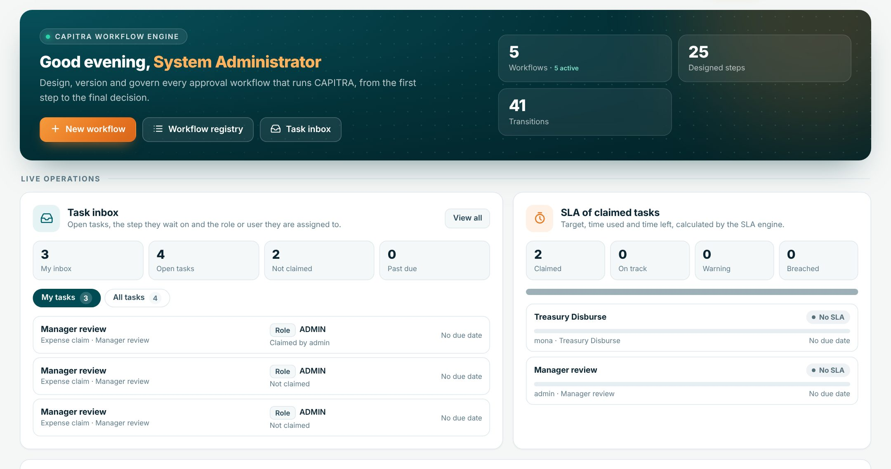
Everything in sections 4 to 6 and 8 to 9 was added on top of the existing engine. A workflow that does not use versions, data fields, documents or out of office runs exactly as before.
Key ideas
| Idea | What it means |
|---|---|
| Workflow | A diagram of steps (BPMN) with a code, e.g. DISBURSEMENT_REQUEST_WF. Only a released, active workflow can start. |
| Workflow type | System-built: started by the system (factoring, portfolios, disbursements). User-defined: started by a user from Start a request, on one document (vacation, expense claim). |
| Instance | One run of a workflow for one business record (a disbursement, a claim). It carries its own data and history. |
| Step | A box in the diagram. A human step creates a task; a system step or a decision runs on its own. |
| Task | The work waiting at a human step, shown in the inbox of a role or one user. |
| Claim | Taking a task so that it is yours. A role task is visible to everyone in the role until someone claims it. |
| Outcome | How a task ended: APPROVE, REJECT, RETURN, COMPLETE… The arrow with the same name decides the next step. |
| Business screen | A Capitra page a step opens (its Route), such as Treasury Disburse. The task is completed from that page. |
| Version | A frozen copy of a released workflow. Running instances keep their version when the workflow changes. |
| Data field | A value each instance carries (amount, client, decision), with a type that is checked. |
| Document | A form designed once in the Document Designer, with its own fields and which of them are required. A user-defined workflow links one document to the whole workflow; a system-built workflow can link a document to any step. |
| Request | One run of a user-defined workflow, sent by a user on its document. The requester follows it under My requests. |
| Data source | A list of values a form's drop-down offers: users, clients, currencies, or a list you keep. |
| Out of office | Who works your tasks while you are away, between two dates. |
Designing a workflow
Workspace → Workflow Registry lists every workflow with its code, version, status and whether it is active. Open one to edit it in the designer, or use New workflow.
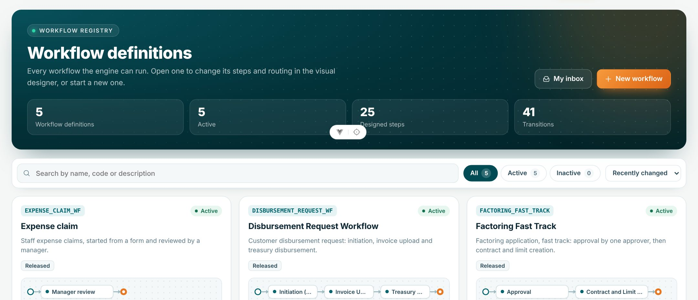
The designer
Drag elements from Tools onto the canvas and connect them with arrows. Click an element to open its Properties on the right; click the empty canvas for the Workflow Properties. The header holds Fit, Versions (section 4), Data Fields (section 5), BPMN XML and Save Workflow.
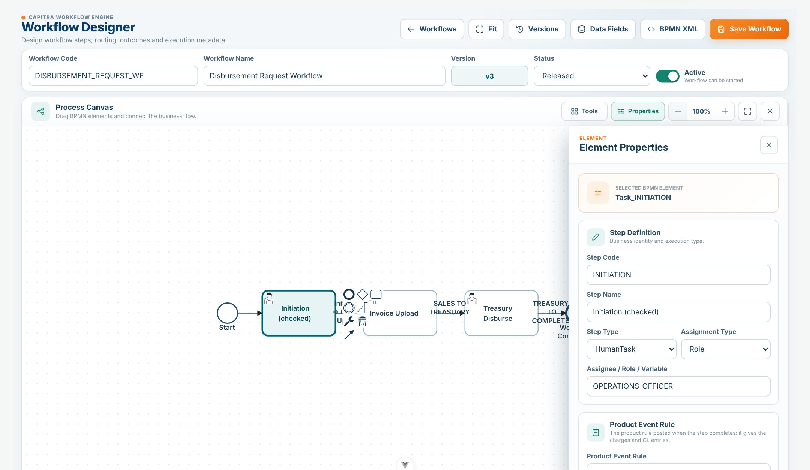
Workflow type
In Workflow Properties, under Workflow Type, choose who starts the workflow:
| Type | Started by | Documents |
|---|---|---|
| System-built | The system, from its module (factoring, portfolios, disbursements). Never offered on Start a request. | Optional, on any human step (step setting Document). |
| User-defined | A user, from Start a request (section 8). | Exactly one, for the whole workflow, chosen under Document in Workflow Properties. The requester fills it in; every approval step shows it read-only. |
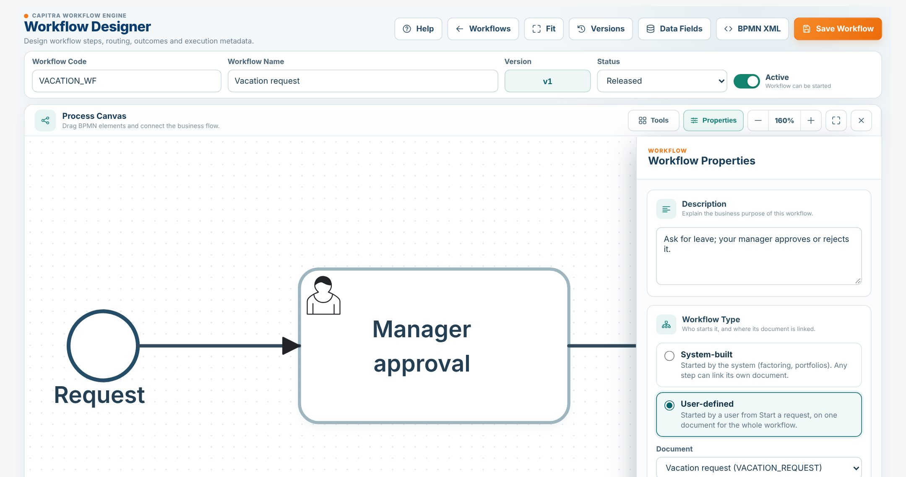
A user-defined workflow can be saved as a Draft without a document, but it is released only once its document is chosen. Workflows made before types count as user-defined when their Start had a form, and system-built otherwise.
Step settings
| Setting | What it does |
|---|---|
| Step Code | A stable code such as TREASURY_DISBURSE. Modules recognise steps by it, so keep it once in use. |
| Step Name | What people see in the inbox. |
| Step Type | HumanTask (creates a task), SystemTask, Decision, Start, End. |
| Assignment | Role (everyone in the role sees it) or User (one person, by user name in Assignee). |
| Product Event Rule | The product rule posted when the step completes: its charges and GL entries. |
| Document | System-built workflows only: the document people work on at this step (section 6). In a user-defined workflow every step shows the workflow's document. |
| Route / Page | The business screen the task opens, with its parameters. Leave empty for a step worked on its form. |
| Actions | The buttons that complete the task: APPROVE, REJECT, RETURN, COMPLETE… CLAIM is the claim button, not an outcome. |
Arrows and outcomes
When a step has more than one arrow out, name each arrow after an outcome (APPROVE, REJECT). The task's outcome picks the arrow. With one arrow, any outcome follows it.
Saving and releasing
- Set Status to Released and leave Active on, so the workflow can start.
- Save Workflow. If the steps or arrows changed, Capitra makes a new version (section 4).
- A Draft workflow can be saved as often as you like; it cannot start.
Versions
Each time a released workflow is saved with changed steps or arrows, Capitra keeps the old one as a version and the change becomes the new current version. Instances already running stay on the version they started with, so a change never breaks work in progress. Moving boxes around (layout only) does not make a new version.
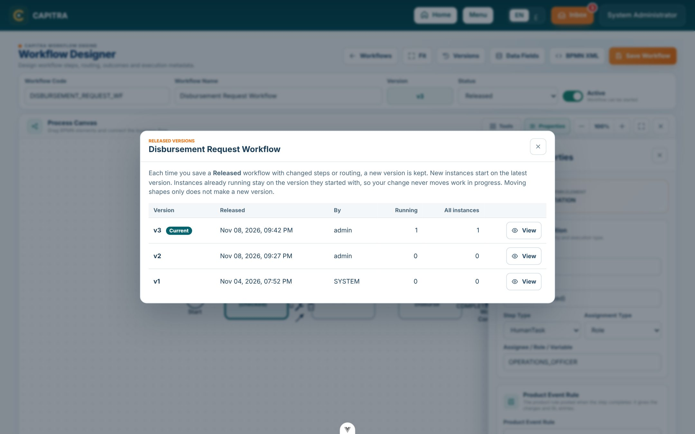
- View opens an old version read-only. A banner says so; Back to current workflow returns.
- Save is off while you look at an old version.
- The version number is set by Capitra and shown in the chip beside the code.
Data fields
Data fields are the values each instance of a workflow carries: the amount, the client, the decision. Open them with Data Fields in the designer. Each field has a name (what screens and forms use, keep it once in use), a label, a type, whether it is required, a default and, for Choice, its choices.
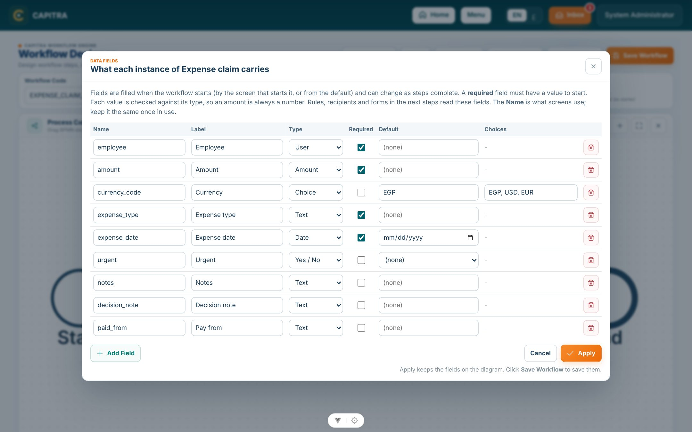
| Type | Holds | Stored as |
|---|---|---|
| Text | Any text | As typed |
| Number | A whole number | 1250 |
| Amount | An amount with decimals | 1250.50 |
| Yes / No | Yes or No | true / false |
| Date | A date | 2026-11-08 |
| Choice | One of the listed choices | The choice |
| User | A user of Capitra | The user name |
- When an instance starts, empty fields take their default, every value is checked against its type, and a required field must have a value.
- When a task completes, the values it sends are checked the same way.
- The task page shows the fields under Workflow data.
Documents and data sources
A document is a form you design once in the Document Designer: its own fields, which of them are required, and how it looks. It does not belong to any workflow. Workflows link it in the designer: a user-defined workflow on the whole workflow, a system-built workflow on a step (section 3).
Designing a document
- Workspace → Document Designer → New document. Give it a name and a code, e.g.
VACATION_REQUEST. - Under Fields, Add field for each value: its label (the name fills in by itself), its type, the choices of a Choice list, a default, and whether it is Required.
- Each field appears under Layout. Click one to set its label on the form, its control, its data source (for a drop-down), its width on a 2-column document, help text, and Read-only. Add Headings and Notes between fields, and order them with the arrows.
- The Preview shows the document as people will see it.
- Create document. Used by shows the workflows that link it.
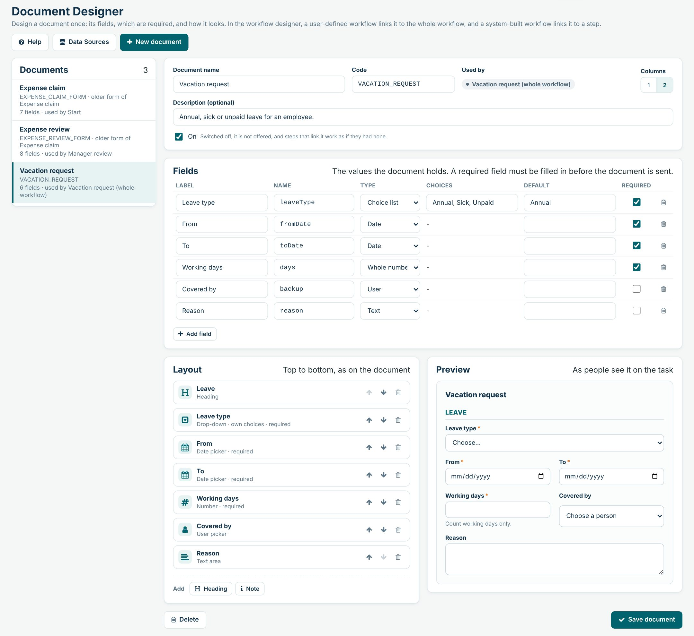
| Field type | Controls it can use | Stored as |
|---|---|---|
| Text | Text box, text area, drop-down | As typed |
| Whole number | Number, drop-down | 5 |
| Amount | Amount | 1250.50 |
| Yes / No | Yes / No buttons | true / false |
| Date | Date picker | 2026-12-20 |
| Choice list | Drop-down (its own choices, or a data source) | The choice |
| User | User picker | The user name |
Data sources
Workspace → Data Sources. The lists a document's drop-downs offer. Three are built in and always current: Users, Clients and Currencies. Make your own for anything else: a code, a name and items, each with the value that is stored and the label people see.
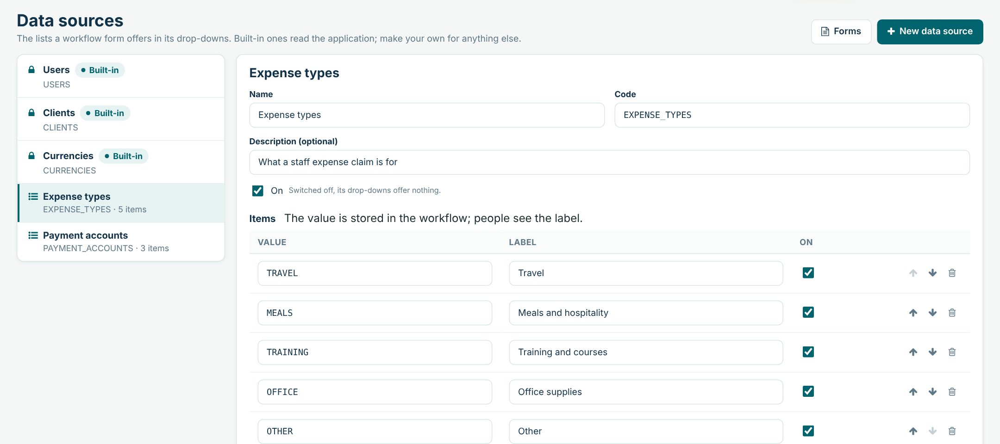
A document in use cannot be deleted, and its code cannot change; switch it off instead. A form made before documents shows older form of its workflow: open it and save it once to make it a document of its own; the workflow keeps using it.
Working your tasks
My Inbox lists the tasks you may work: those assigned to you, to one of your roles, the ones you claimed, and those of people you cover (section 9). Overdue tasks come first. Filter by All, Claimed by me, Unclaimed or Overdue, search, or pick a workflow.
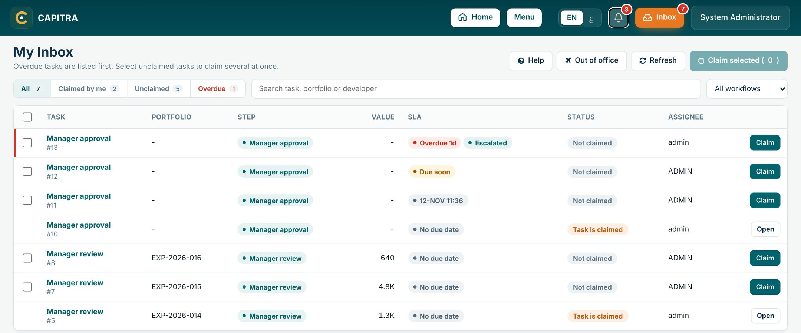
The steps of a task
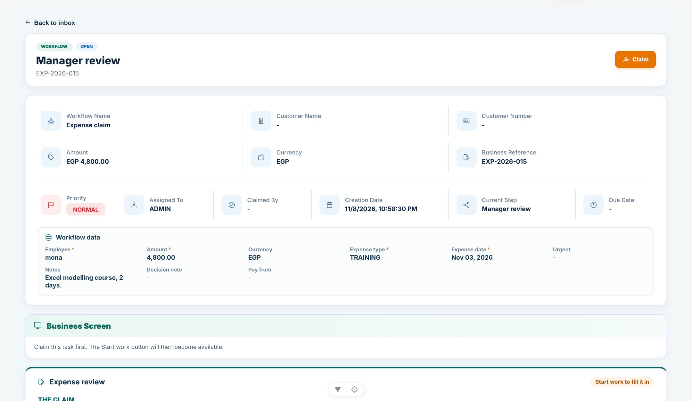
A step worked on its form
After Start work the form opens for filling in. Required fields carry an orange star. If one is empty, the task is not completed: the message says which field, and what you typed stays on the page. Rejecting or returning a task does not need the form filled in.
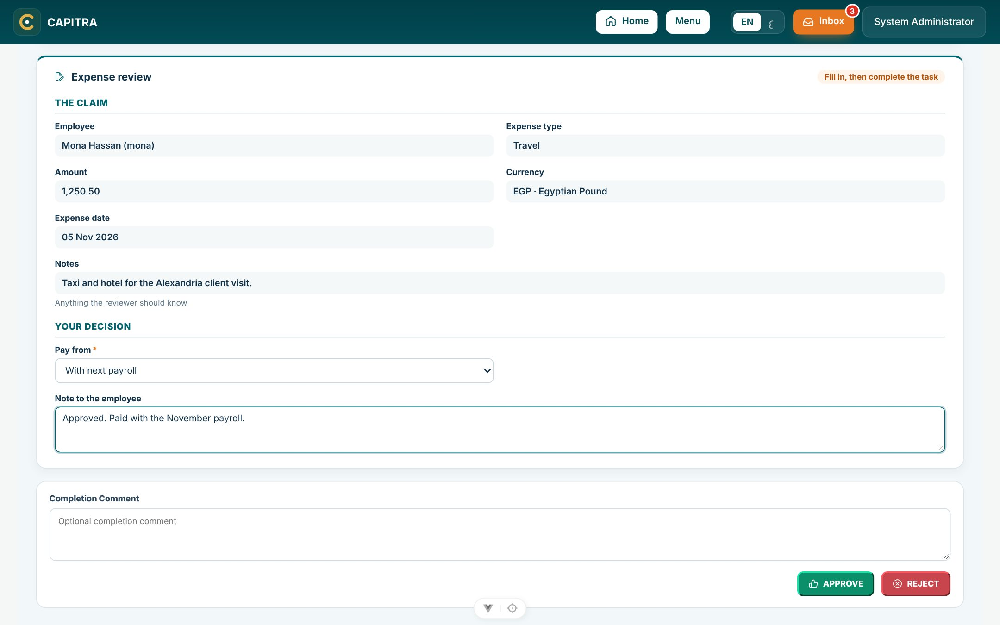
Approving a request
A task of a user-defined workflow shows the request as the requester sent it, marked The request as sent: read-only. Read it, add a comment, then Approve or Reject. The requester sees your decision and comment under My requests (section 8).
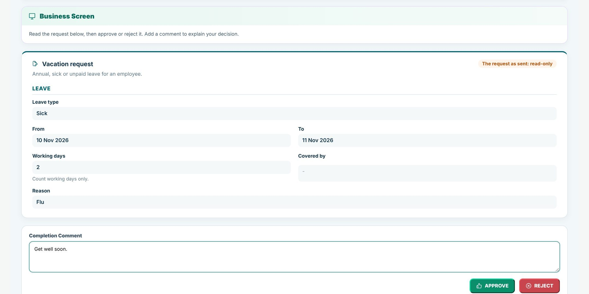
Start a request
Anyone can send a request (a vacation, an expense claim…) with Start a request on Home, or Workspace → Start a request. The page lists the user-defined workflows only; system-built workflows are started by their modules.
- Choose the request on the left.
- Enter a business reference if you have one.
- Fill in the document. Defaults are already there; required fields carry an orange star.
- Send request. The message says which step comes next and who has it.
My requests
Under the form, My requests lists what you sent, newest first: In progress with the step it is waiting at, or Approved / Rejected with who decided, when, and their comment.
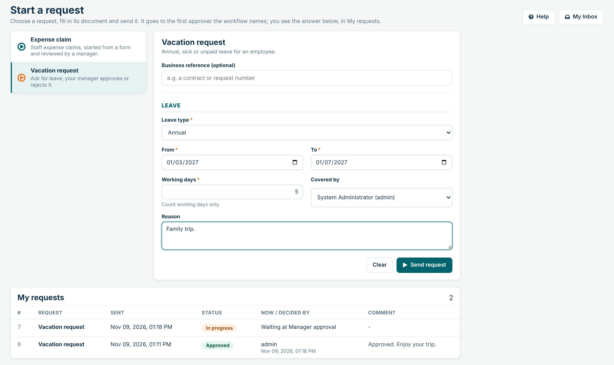
Out of office
Workspace → Out of Office, or the button on My Inbox. Choose who works your tasks, for all workflows or one, and the first and last day away. While the dates run:
- New tasks meant for you go to your delegate.
- Your delegate also sees the tasks already waiting for you and for your roles, with a For <you> tag, and a banner says whom they cover.
- A task you had claimed shows Take over: the delegate claims it from you.
- A rule for one workflow wins over the rule for all workflows. If your delegate is away too, the task passes to their delegate (up to five steps, never back to you).
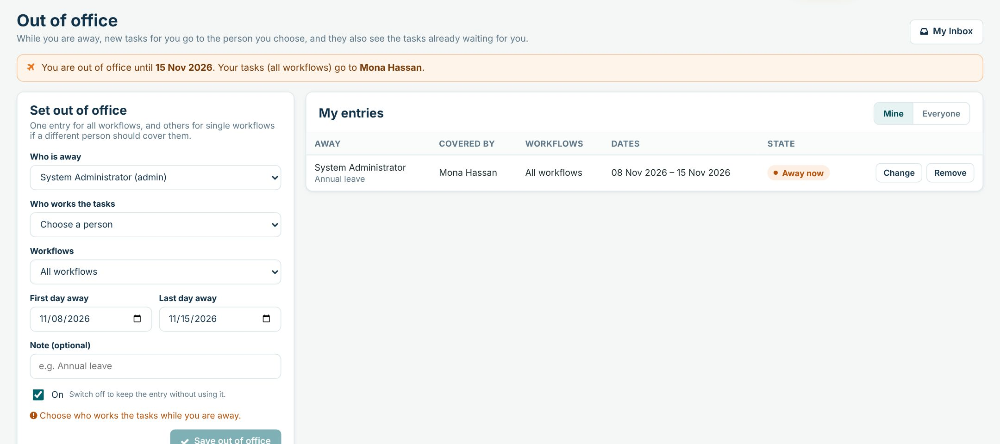
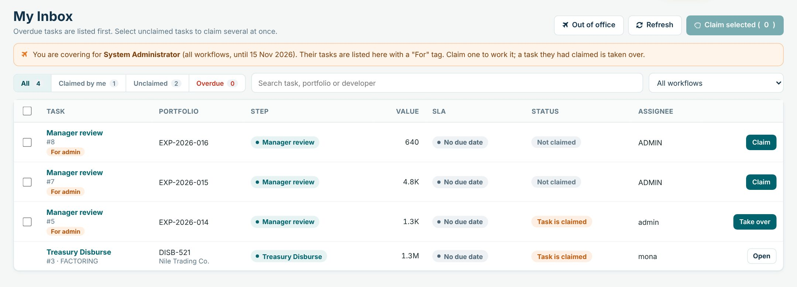
Switch an entry Off to keep it for next time without using it. Workflow administrators can choose Everyone to see and set entries for other people.
Messages and what to do
| Message | What to do |
|---|---|
| This task is not assigned to you. | Someone else claimed it, or it is not for your role. Refresh the inbox. |
| Fill in "…". | A required field of the form is empty. Fill it in and press the action again. |
| "…" must be one of the listed values. | Choose a value from the drop-down. |
| The workflow needs "…" to start. | A required data field has no value. Fill it in on the start form. |
| "…" must be an amount / a whole number / a date. | The value does not fit the field's type. Correct it. |
| Only a released workflow definition can be started. | In the designer, set Status to Released and save. |
| … is a system-built workflow. Its module starts it. | Start it from its own page, or make it user-defined in the designer. |
| … has no document to start it on. | In Workflow Properties, choose the workflow's document and save. |
| A user-defined workflow needs its document. | Choose the document in Workflow Properties, or save the workflow as a Draft. |
| "…" is a Choice field: list its choices. | In the Document Designer, type the choices separated by commas. |
| "…" is not a data field of this document. | Add the field under Fields first, or remove it from the layout. |
| … is used at … | Take the document off those workflows or steps in the designer, or switch it off. |
| … is already out of office … Change that entry instead. | Only one entry per person, workflow and dates. Change the existing one. |
Permissions, statuses, glossary
Permissions Administration → Roles
| Permission | Allows |
|---|---|
| (signed in) | My Inbox, working your tasks, Start a request and My requests, your own out of office |
WFE.DEFINITION.VIEW | Open the registry, designer, versions, Document Designer and data sources; see all open tasks |
WFE.DEFINITION.EDIT | Create, change, release and delete workflows, documents and data sources; set out of office for others |
Statuses
| Item | Statuses |
|---|---|
| Workflow | Draft · Released, and Active on or off |
| Instance | Running · Waiting (at a task) · Completed |
| Request (My requests) | In progress · Approved · Rejected · Completed |
| Task | Open (not claimed) · Claimed · In progress · Completed |
| Out of office entry | Away now · Planned · Ended · Off |
Glossary
| Term | Meaning |
|---|---|
| BPMN | The standard drawing language of the designer |
| Delegate | The person who works your tasks while you are out of office |
| History | The record of every step of an instance: started, entered, claimed, delegated, taken over, completed |
| Route | The business screen a step opens |
| SLA | The target time to finish a task |
| Take over | A delegate claiming a task the away person had claimed |
CAPITRA · Workflow User Manual · Version 1.1 · November 2026